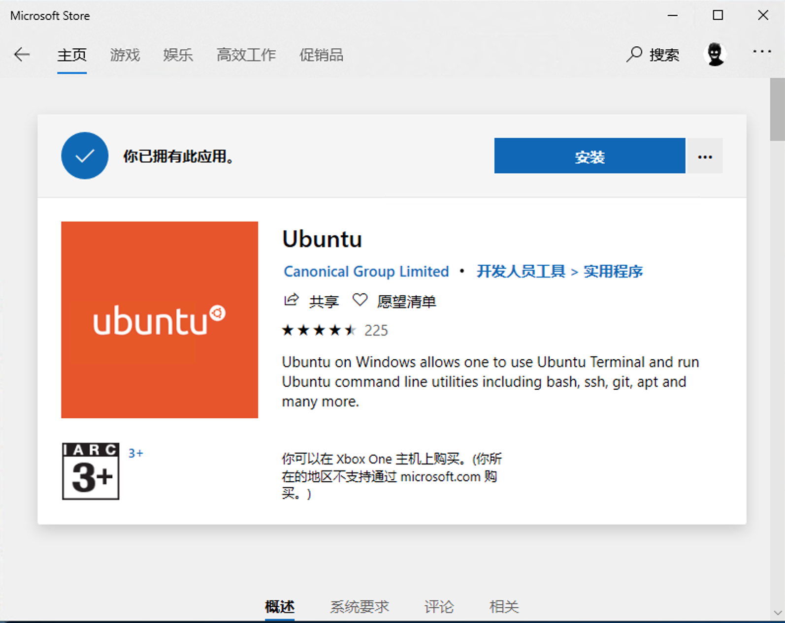
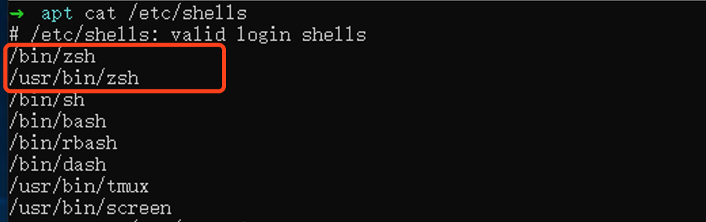

Windows10出了一款子系统Linux,可以方便开发者不在需要依赖虚拟机啦
开始
首先你得是windows10最新版本的系统
进入 系统设置 -> 更新和安全 -> 开发者选项 打开

其次是 进入 控制面板-程序和功能-启用或关闭Windows功能下 选择 “适用于Linux的Window之系统”
然后重启系统
安装Linux系统
打开Windows10的应用商店, 搜索Linux会得到以下结果, 点击第一个进入


这里我安装的是第一个 Ubuntu 系统

点击安装, 等待安装完成
进入Linux系统
安装完成之后, Ctrl + R打开CMD, 输入 bash 就会进入Linux系统了
根据提示, 设置用户名、密码就好了

子系统Ubuntu进阶(可选)
更换 apt-get 安装源(可选、觉得网速好的可以不换)
一般新安装的Linux系统都需要更新软件仓库的, 但是Ubuntu的默认仓库源是国外的,更新数据比较慢, 我们可以先更换软件仓库源为国内的(个人一般喜欢用阿里的源)
准备源
查看系统版本
1 | lsb_release -a |

Codename 是你的系统版本代号
Ubuntu 12.04 (LTS)代号为precise。
Ubuntu 14.04 (LTS)代号为trusty。
Ubuntu 15.04 代号为vivid。
Ubuntu 15.10 代号为wily。
Ubuntu 16.04 (LTS)代号为xenial。
Ubuntu 18.04 (LTS)代号为bionic
Ubuntu 18.04 (LTS)代号为bionic 对应阿里云镜像仓库的地址为:
1 | deb http://mirrors.aliyun.com/ubuntu/ bionic main restricted universe multiverse |
修改 /etc/apt/sources.list 文件
我们需要修改 /etc/apt/sources.list 文件
第一步: 备份 /etc/apt/sources.list 文件
1 | sudo cp /etc/apt/sources.list /etc/apt/sources.list.bak |
.bak 后缀的文件是linux系统中的备份文件
第二部: 修改 /etc/apt/sources.list 文件
1 | sudo vim /etc/apt/sources.list |

打开之后是这样的
注释已有的源, 粘贴阿里的镜像地址保存即可
vim编辑器说明:
vi编辑器一共有三种模式，分别是命令模式（command mode）默认、插入模式（Insert mode）和底行模式（last line mode）。命令模式下我们只能控制屏幕光标的移动，字符、字或行的删除，移动复制某区段及进入Insert mode下，或者到 last line mode等；插入模式下可以做文字输入，按「ESC」键可回到命令行模式；底行模式下，可以将文件保存或退出vi，也可以设置编辑环境，如寻找字符串、列出行号等。
vim编辑器的常用命令:
vim /etc/apt/sources.list打开文件(不存在的文件,在保存时自动创建) 默认(命令模式)i(插入模式) 在光标前开始插入a(插入模式) 在光标后开始插入shift + :(命令模式) 调出vim的命令行, 输入命令(wq保存退出、q!不保存退出、w仅保存)d + up键(命令模式) 浏览模式下 删除一行
apt-get update、 apt-get upgrade 不要忘记了, 不管有没有换源都要执行的
zsh
zsh是一个终端shell程序,比默认的bash终端好用, 可以搭配oh-my-zsh美化你的命令行
安装 zsh oh-my-zsh
安装zsh
sudo apt-get install zsh
检查zsh
zsh --version
如果没有看到版本号、或者报错,则说明安装失败了
设置为默认终端
sudo chsh -s /usr/bin/zsh <username>
如果报错, 则看一下 /etc/shells 文件中是否包含 /bin/zsh、/usr/bin/zsh, 没有就添加

顺序不重要
再次执行 sudo chsh -s /usr/bin/zsh <username>
成功则关闭终端,重新打开(退出用户,重新登陆)
执行 bash 进入Linux子系统
执行 echo $SHELL 会输出 /bin/zsh
执行 $SHELL --version 会输出 zsh 5.4.2 (x86_64-ubuntu-linux-gnu)
上面两部执行正确,则说明安装zsh并设置为默认终端成功了,
我遇到的windows10子系统的一个问题
在设置为默认终端时,为参考官方教程来做,无法将zsh设置为默认终端
官方命令: sudo chsh -s $(which zsh)
检查是否设置默认成功: echo $SHELL
终端应该输出: /bin/zsh, 如果不是 或者是 空 则说明默认配置是失败的
查看 /etc/passwd 文件中 对应你的用户配置 是否是 指定 /bin/zsh
最终解决问题的办法
编辑 ~/.bash_profile 文件，（不存在就创建）
加入以下类容：
1 | # 指定 zsh的目录 |

执行 sudo chsh -s /usr/bin/zsh <username> 命令 (最后面对应你的用户名)
下载 oh-my-zsh 美化zsh
参考官方的教程
使用 curl
1 | sh -c "$(curl -fsSL https://raw.github.com/ohmyzsh/ohmyzsh/master/tools/install.sh)" |
使用 wget
1 | sh -c "$(wget https://raw.github.com/ohmyzsh/ohmyzsh/master/tools/install.sh -O -)" |
默认是 robbyrussell 样式
修改 ~/.zshrc 的 ZSH_THEME=robbyrussell 值 即可更换样式, 如果你不想要任何样式,则将值设置为””即可
其他
后面需要学习的:
- 安装docker
- putty远程连接
结束
…